| 日付 | 2021年9月12日（日） |
|---|---|
| 山域 | 日光周辺 |
| メンバー | 家族（妻、長女・10歳、長男・8歳） |
| 山行形態 | 子連れ日帰り |
| アクセス | 車 |
| ルート (Map) | 二荒山神社 (8:57) - (10:13) 五合目 - (11:50) 男体山 (12:40) - (13:50) 五合目 - (14:50) 二荒山神社 |
4回も山に行った旅行の後は、天候不順や予定などで1ヶ月山から離れてしまった。
今週末は北の方が晴れそうなので、日光の男体山に行くことにする。
12年振りの再訪だが、前回は裏の志津乗越から登り、
天気もあまり良くなかったため、消化不良のまま残っていた山だ。
今回は二荒山神社にお参りした後、表登山道から登る。
二荒山神社の男体山登山者用駐車場はすでにいっぱい。
中禅寺湖の畔の駐車場に車を停める。標高1270m。
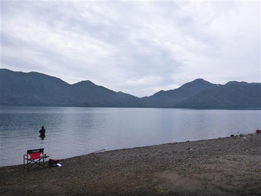
男体山の麓にある二荒山神社を訪問。立派な鳥居だ。
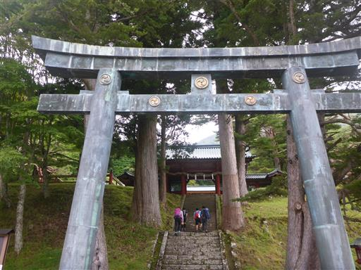
階段の両側には大きな杉の木が聳えている。

二荒山神社でお参り。
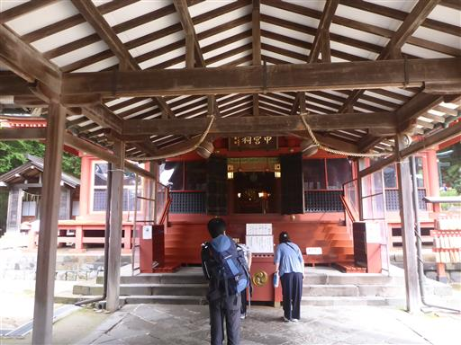
変わった顔の狛犬。
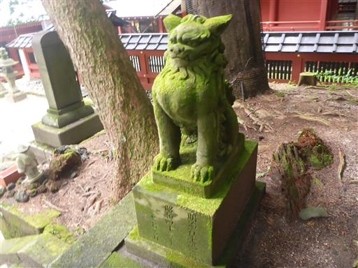
神社で入山料を払い、入山する。
15年前にここを訪れたときは、登拝期間が終わり門は閉じられていた。
ようやくこの門を潜ることができる。

最初は階段が続く。
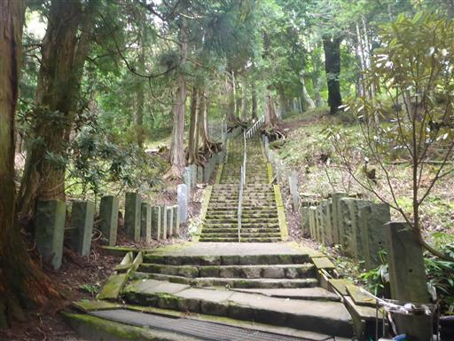
すぐに一合目に到着。いくらなんでも早すぎるだろう。
なかなか一合目に辿り着けなかった岩手山とはえらい違いだ。
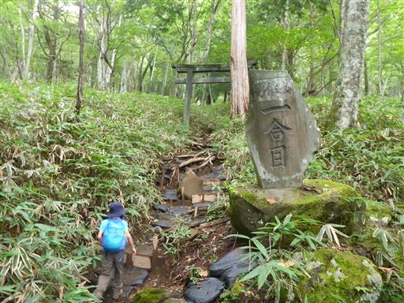
地面は湿っていて、土の斜面は結構滑りやすい。
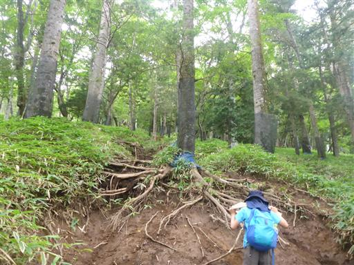
三合目で車道に到着。
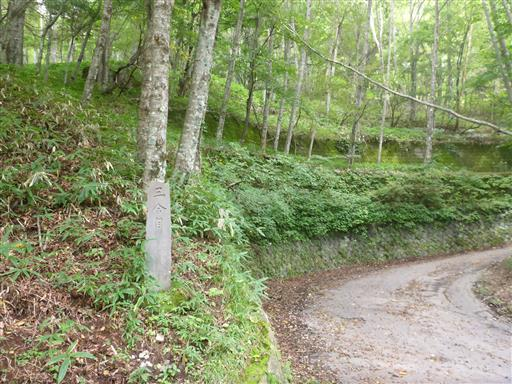
ここから先はしばらく車道を歩く。
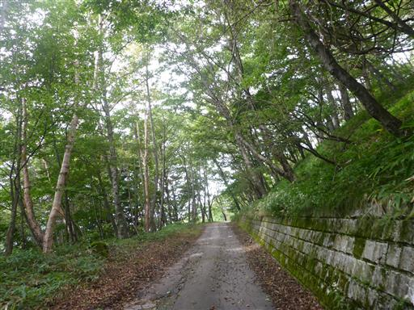
メスのクワガタを発見。
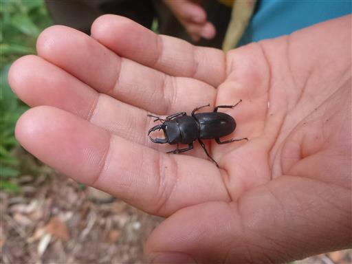
四合目で再び登山道へ。
人気の山なのだし、三合目～四合目も登山道を整備してほしいところだ。
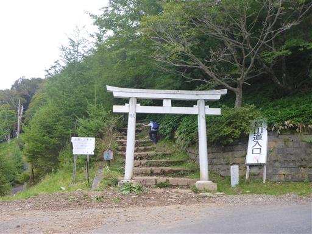
五合目。中間地点だ。
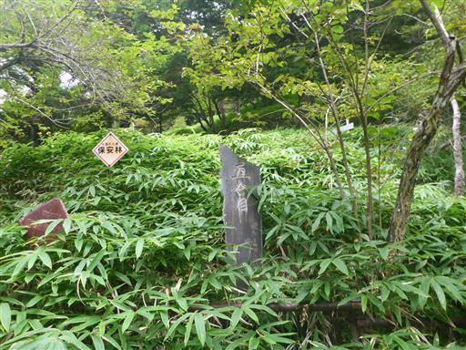
だんだんと登山道が険しくなってくる。
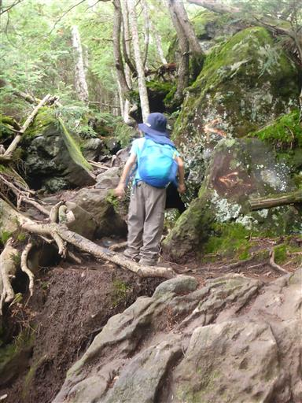
登山者の数が増えてくる。息子は快調に飛ばしていき、時々上で待っている。
妻が少し遅れているので、妻の荷物1kgを息子の荷物に移動。
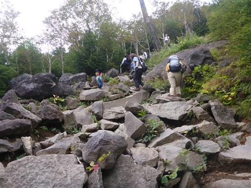
眼下に中禅寺湖が見えてきた。
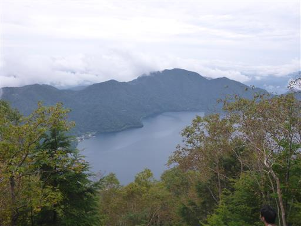
七合目。岩だらけの登山道だが、足を置く場所を考えながら登れるので、
この方が気が紛れて良い。
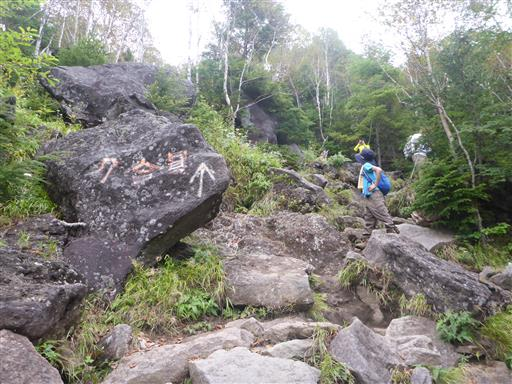
何度目かの鳥居を潜る。
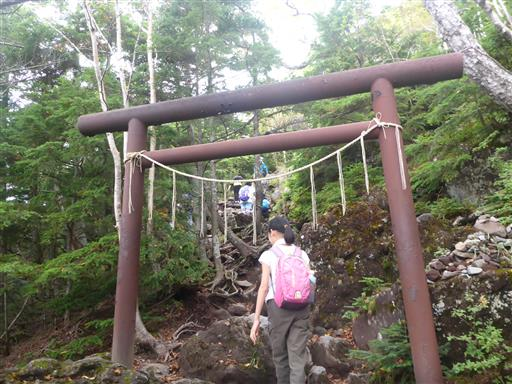
巨大なキノコ。
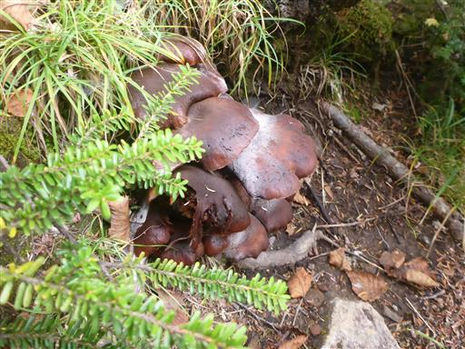
何のためにあるのかよく分からない鎖。
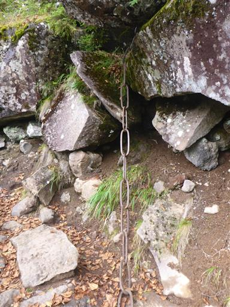
九合目を過ぎると、日光白根山と眼下に戦場ヶ原が見える。
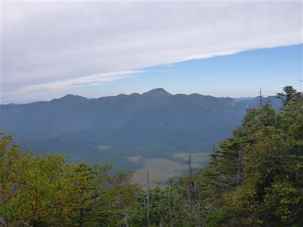
最後の登りは砂礫の道。こうなるとなかなか足が前に出ない。
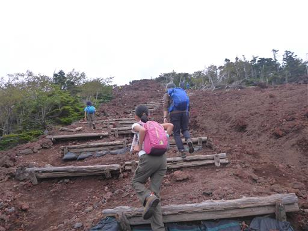
中禅寺湖の全貌が見えてくる。
展望はあるが思った以上に雲が多く、残念ながら晴れとはいかない。
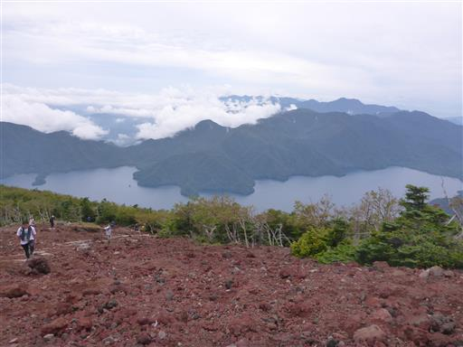
周囲は赤い土だ。岩の壁に沿って登る。
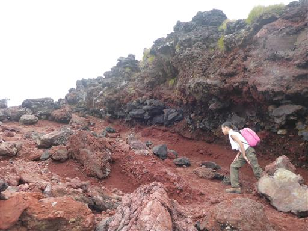
山頂が見えてきた。もう子供たちは先行して山頂に着いている。
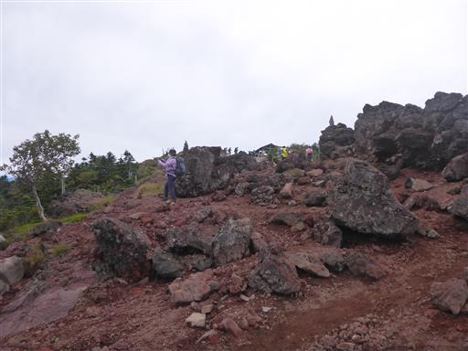
男体山山頂に到着。標高2486m。
久々の登山なのと、ペースが速かったこともあり、かなり疲れてしまった。
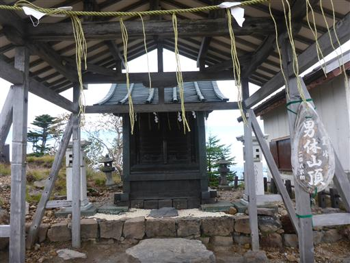
山頂からは大展望が広がる。
見えているのは左から太郎山、大真名子山、女峰山だ。
雲が途中でスパッとなくなって、北側は青空が広がっている。
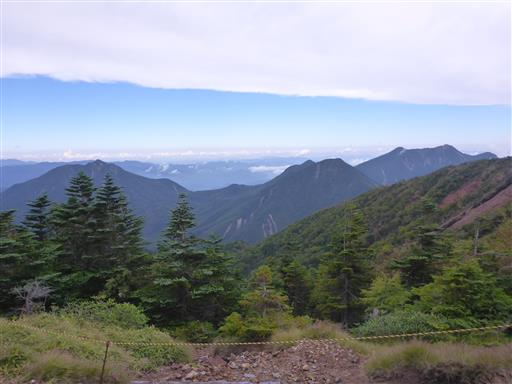
山頂にある二荒山大神像。立派な像だ。
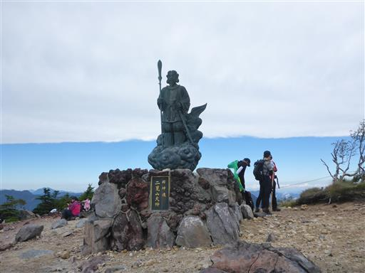
昼食をとったら、広い山頂の最高地点を探してみる。
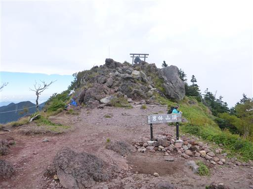
巨大な剣が突き立っている。ここが一番標高が高そうだ。
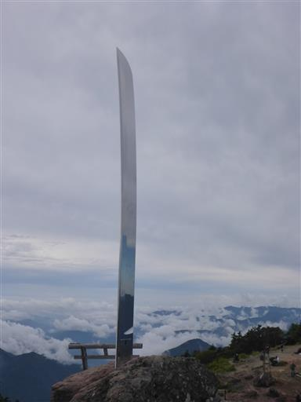
この辺りからの景色も良い。遠くに見えているのは尾瀬の辺りの山々だ。
展望を満喫したら元来た道を下山する。
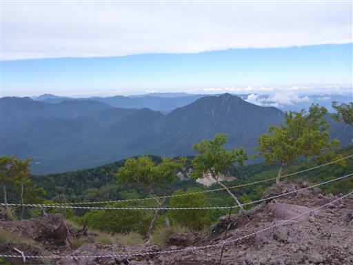
続々と登ってくる人とすれ違い、二荒山神社に下山する。
快晴にならなかったのは残念だったが、山頂からは四囲の展望を満喫でき、
久々にガッツリと歩くことができて充実した登山だった。
今回の山行では息子の歩く速度の速さが目立った。2年生になってだいぶ体力が向上したようだ。
これまでほとんど荷物を持たせていなかったが、そろそろ荷物の配分を考え直してもよさそうだ。
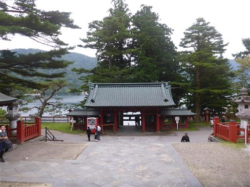
息子が友人への誕生日プレゼントを買うため、目についた土産物屋に立ち寄る。
商売熱心なおばあさんが一人で切り盛りしている。
少々高めな気がするが、駐車場が無料なのは有難い。
ここでキーホルダーを3個購入。
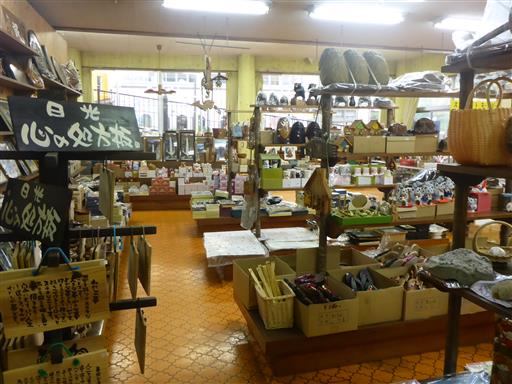
上のレストランは閉まっているようだ。
人気の観光地といえど、周囲に廃業している店は所々目につく。
ここも10年後に来たら、無くなってるかもしれない。